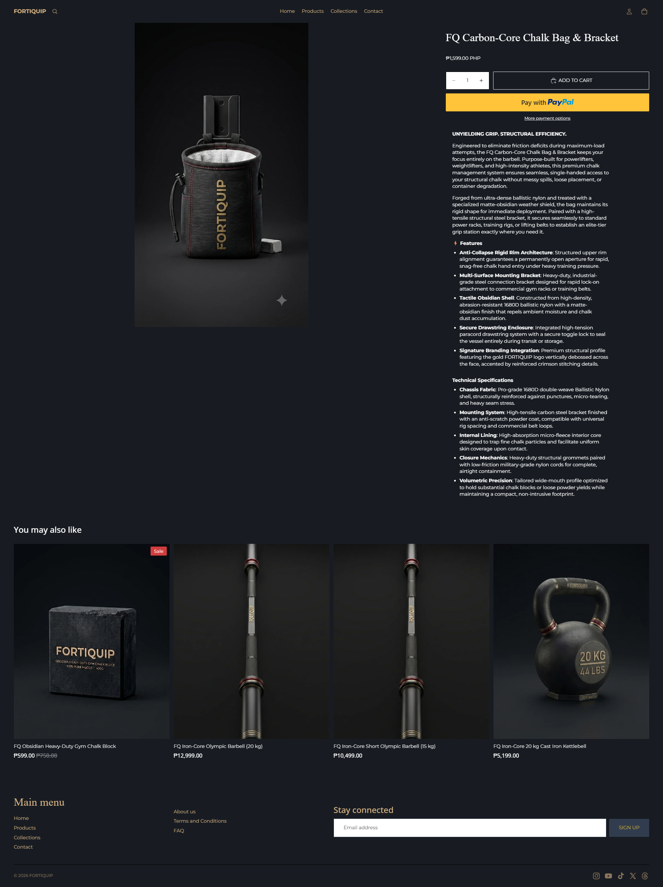
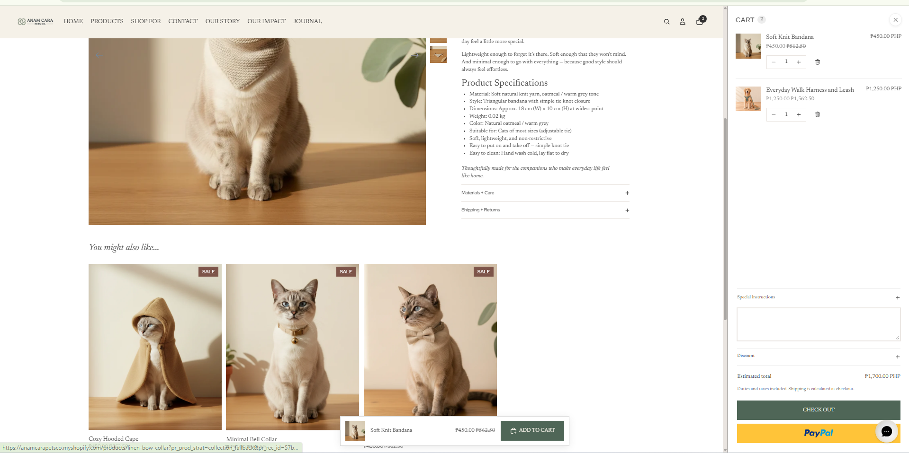
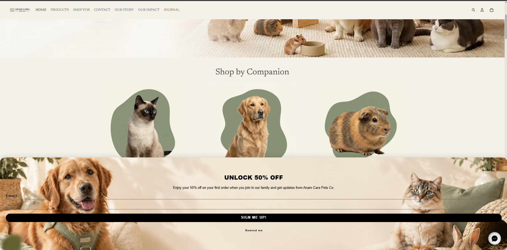

Fortiquip
Premium fitness equipment e-commerce store architecture

Building the storefront around the product catalog
I approached Fortiquip as a premium fitness equipment storefront where product discovery needed to remain clear even with multiple equipment categories.
Instead of treating the homepage as only a visual landing page, I structured it as an entry point into the catalog. The navigation, collections, featured products, best sellers, and supporting content work together to guide visitors toward different types of fitness equipment.
How I structured Fortiquip
The strategy was to make a relatively large fitness catalog easier to understand and navigate. I used the brand identity, product naming system, collections, product pages, and supporting pages as connected parts of one storefront rather than separate tasks.
Define the Product System
Products were organized around recognizable product families and equipment functions to create consistency across the catalog.
Create Clear Collection Paths
Collections were structured around customer shopping intent, including Barbells, Free Weights, Weight Benches, Power Racks & Squat Stands, Gym Storage, Conditioning Gear, Hydration & Accessories, and other merchandising groups.
Build Product-Level Information
Product pages were structured with product benefits, features, specifications, pricing, imagery, and purchasing information.
Support the Customer Journey
FAQ, contact, shipping, returns, terms, and other supporting information were included to make the storefront feel complete and easier to navigate.
Listing organization was treated as part of the store architecture.
A product listing should not exist independently from the rest of the catalog. I organized the Fortiquip products so product names, product families, collections, merchandising sections, and customer browsing paths could work together.
Used consistent naming patterns such as FQ, Onyx, Iron-Core, Obsidian, Carbon-Core, and Hydro-Core product lines.
Products were grouped into relevant equipment categories such as Free Weights, Barbells, Weight Benches, Power Racks & Squat Stands, Gym Storage, Conditioning Gear, and Hydration & Accessories.
Product pages included structured descriptions, features, technical specifications, pricing, imagery, and purchasing information.
The product listing area included availability and price filtering together with sorting options for easier product discovery.
Featured products, Must Have products, Best Sellers, and collection-based browsing were used to create additional paths into the catalog.
Product naming and presentation were kept consistent so the catalog feels like one product system rather than a collection of unrelated listings.
Product pages designed around information clarity
I structured the product pages to give shoppers both the main product information and the deeper specifications needed for fitness equipment.
The product content uses a benefit-led introduction followed by feature details and technical specifications. This creates a clearer hierarchy between what the product does, why it matters, and what the product is made of.

Supporting pages that make the store feel complete
I also created supporting pages so the storefront was not limited to a homepage, collection pages, and product pages.
About Us
Built around the Fortiquip manifesto, brand positioning, product philosophy, and hardware standards.
Contact
Structured as a customer support entry point with contact information, order-related information, and a contact form.
FAQ
Addressed common questions around processing, shipping, returns, installment information, and the demo-store nature of the project.
Terms & Conditions
Included shipping, returns, refunds, privacy, and other store-policy information for the conceptual storefront.
Store architecture in practice
The screenshots below preserve the work even if the temporary Shopify demo store is no longer publicly accessible.



What this project demonstrates
Anam Cara Pets Co.
Pet lifestyle e-commerce store built around companion-based browsing and organized product discovery
Designing the catalog around the companion, not just the product
Anam Cara Pets Co. was structured as a warm, premium pet lifestyle store where customers could begin shopping based on the type of companion they have.
The store combines product organization with brand storytelling. The browsing structure separates Cats, Dogs, and Small Pets while product types create additional paths for customers looking for specific needs.
How I structured Anam Cara Pets Co.
The main strategy was to combine a clear product taxonomy with a brand experience that feels personal and trustworthy. Instead of placing every product into one large catalog, the store creates several ways for customers to discover products.
Start With the Companion
The primary browsing structure begins with Cats, Dogs, and Small Pets so customers can quickly move toward relevant products.
Organize by Product Purpose
Product types such as Care, Play, Travel, Home, Accessories, Feed, Habitat, and Walk create more specific browsing paths.
Connect Products With Content
The Journal, brand story, featured pets, and impact sections create content pathways alongside the product catalog.
Build Customer Confidence
Product specifications, care information, shipping and returns, contact options, and related products are presented within the customer journey.
Product taxonomy designed for easier browsing
Catalog organization was one of the main parts of the build. I structured the products so the store could support both animal-based browsing and product-purpose browsing.
This structure allows the same catalog to support multiple customer journeys instead of relying on a single collection page.
Product information organized beyond the title and price
The product page was structured to give customers the information they need before making a purchase decision while keeping the page visually aligned with the brand.

Filtering and collection structure work together
The product listing experience uses filters to help customers narrow the catalog by relevant attributes.
Collection paths start with the customer's companion
Separate Cats, Dogs, and Small Pets collections give visitors a clear starting point, with product categories organized around the needs of each companion.


Custom content pages used to build the brand experience
I created more than a standard product catalog. The additional pages give the store places to communicate its story, purpose, customer support information, and editorial content.
Our Story
Communicates the brand story, design principles, real-life usability, and the philosophy behind the products.
Our Impact
Communicates the store's stated impact initiative, including the message that 20% of profits support pets in need, together with volunteering and community-focused content.
Journal
Provides an editorial area for educational and lifestyle content related to pets, pet ownership, and everyday routines.
Contact
Provides a direct customer communication path with help categories, a contact form, FAQ-style information, and additional support content.
Content architecture beyond the product catalog
Anam Cara was designed to connect product browsing with brand storytelling. The additional pages create places where customers can understand the brand, its principles, and the purpose behind the storefront.
Using editorial content as another discovery path
The Journal was created as a content area that supports the overall brand experience rather than functioning as an unrelated blog.
Topics such as creating a home that works for pets and people, everyday essentials for new pet parents, and calm morning routines provide useful content around the same customer and product ecosystem.
Supporting the customer journey beyond the product page
Cart Experience
The cart drawer provides product information, quantities, estimated total, discount or special-instruction options, checkout, and PayPal purchasing options.

Customer Contact
The Contact page gives customers a dedicated place to ask questions and access support information instead of relying only on product pages.

Klaviyo Email Signup
A Klaviyo signup popup invites visitors to subscribe, connecting storefront discovery with email marketing.

Gorgias Live Chat
A Gorgias chat integration gives shoppers a direct support channel while browsing the storefront.

Preserving the complete Shopify build
These screenshots document the store architecture and major customer-facing pages so the project remains part of my portfolio even if the temporary demo store is no longer accessible.

What this project demonstrates
I don't treat Shopify tasks as isolated tasks.
Whether I'm adding a product, organizing a collection, researching an item, or updating a page, I look at how that change affects the rest of the storefront.
Understand
Understand the store, product, customer, and business requirements.
Audit
Review the existing catalog, structure, information, and customer-facing content.
Research
Research products, competitors, suppliers, specifications, and supporting information when required.
Organize
Map products, collections, tags, information, and content into a clear structure.
Execute
Implement the agreed Shopify updates and keep the storefront consistent.
Review
Check the result from both the backend and customer-facing perspective.
Need someone who can keep the catalog, storefront, and e-commerce tasks organized?
I'm available for Shopify store management, product listing operations, product research and sourcing, and e-commerce administrative support.